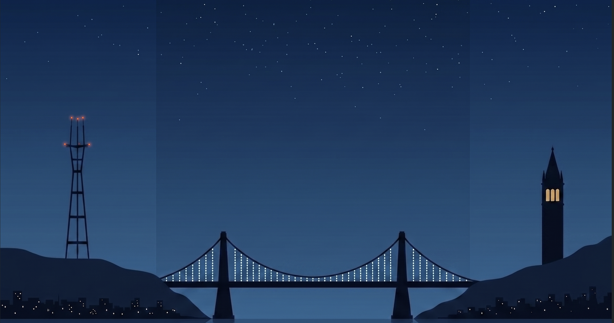

ELO
Extremely Low Orbit
Close enough to feel the pull, too grounded to leave the atmosphere.

Field notes from the rooms where San Francisco argues with itself about what comes next: AI-industry workshops and launches on one side of town, readings and small-press gatherings on the other. Written from inside both, since not many people are.
Filed after, not during. Reported at ground level, no matter how high the conversation gets.
The Utopia Debates
Lightning Talks & Project Show 'n Tell